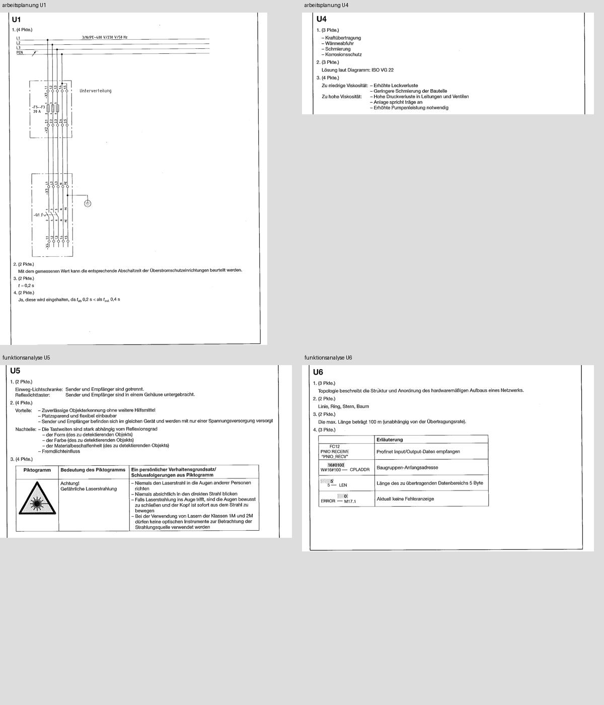

Arbeitsplanung → Funktionsanalyse → WiSo. Alle drei Module freigegeben. Keine manuellen Antwortprüfungen offen.
| Modul | Aufgaben | MC | U-Lösungen | Review | Links |
|---|---|---|---|---|---|
| arbeitsplanung | 36 | 28/28 | 8/8 | 0 | Vorschau / Quellen · Lernen |
| funktionsanalyse | 36 | 28/28 | 8/8 | 0 | Vorschau / Quellen · Lernen |
| wiso | 24 | 18/18 | 6/6 | 0 | Vorschau / Quellen · Lernen |
97 neue Seiten einmal gecacht: AP 34, FA 28, WiSo 20, gemeinsame Lösung 15. Alte PDF-Neuscans: 0. Wiederholung: 12 Schritte übersprungen, 0 Seiten gerendert. Bestehende Profile portrait-explicit-regions / official-ring-grid wiederverwendet; keine globalen Schwellen geändert.
AP Bild A / Stückliste (Seite 4) ist gemeinsames Material für Q3/Q4; Hydraulikschaltplan Seite 33 für U5. AP U1/U2 und FA U7/U8 besitzen explizite Fortsetzungen. Alle notwendigen Materialien vorhanden. Keine separate Korrekturdatei im gelieferten Archiv.
Checkpoint / Unverändertheitsnachweis · Statusdaten
AP U1/U4: Überschriften vollständig aufgenommen. FA U5/U6: Trennung an Original-Linie. Nur vertikale Anpassungen unter 25 PDF-Punkten auf derselben Seite; keine Änderungen an Identität, Inhalt, Antwortwerten oder Bewertung. Ursprüngliche Extraktion, Profile und Audit-Gates unverändert erhalten. Veröffentlichte Module sind für diesen Revisionsweg gesperrt.
AP Revisionsbeleg · FA Revisionsbeleg

18 Lern-/Originalprüfung-/Jahrfilter-Prüfungen · Fortschritt, Notizen und Mobilansicht
Neuer Modulfortschritt · Mobilansicht · FA Antwort und offizielle Quelle
Benutzerbestätigung importiert: FA Q23=3, Q24=3, Q26=4. Gesperrte manuelle Quellenprüfung; 28/28 MC, 8/8 U, Production. Keine PDF geöffnet.
Nach Sommer 2022 gestoppt. Keine Bearbeitung Winter 2022/23, kein Firebase-Setup, keine Lernalgorithmus-Änderung.